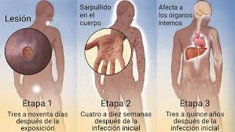

La gonorrea es causada por la bacteria Neisseria gonorrhoeae, que puede crecer rápido y multiplicarse fácilmente en las áreas húmedas y tibias del aparato reproductor. Los síntomas más comunes de una infección gonorreica son flujo vaginal o secreción en el pene y micción difícil o dolorosa. Al igual que en la infección por clamidia, las complicaciones más comunes y graves de la gonorrea ocurren en las mujeres e incluyen la enfermedad pélvica inflamatoria, embarazo ectópico, infertilidad y una potencial transmisión de la enfermedad al feto en desarrollo, si se contrae durante el embarazo. La gonorrea también puede infectar la boca, la garganta, los ojos y el recto y extenderse a la sangre y las articulaciones, donde puede convertirse en una enfermedad mortal. Además, las personas con gonorrea pueden contraer el VIH, el virus que causa el SIDA, más fácilmente. Las personas infectadas por el VIH que tienen gonorrea también tienen más probabilidad de transmitir el virus a otras personas.

Las infecciones por sífilis, causadas por la bacteria Treponema pallidum, se transmiten de persona a persona durante el acto sexual vaginal, anal u oral mediante el contacto directo con las úlceras llamadas chancros. Entre 2001 y 2009, los datos de los Centros para el Control y la Prevención de Enfermedades (CDC por sus siglas en inglés) muestran que la tasa de sífilis ha aumentado año a año. Las personas con mayor riesgo de contraer sífilis son los hombres que tienen sexo tanto con hombres como con mujeres y las personas que viven en el sur.10 El primer signo de sífilis es un chancro, una úlcera genital indolora que por lo general aparece en el pene o en la vagina o sus alrededores. Además de ser el primer signo de una infección de sífilis, los chancros hacen que una persona tenga de dos a cinco veces más probabilidad de contraer el VIH. Si la persona ya tiene el VIH, los chancros también aumentan la probabilidad de que el virus se transmita a su pareja sexual. Estas úlceras suelen desaparecer por sí solas, incluso sin tratamiento. Sin embargo, el cuerpo no elimina la infección por sí solo y, con el tiempo, la sífilis puede afectar otros órganos como la piel, el corazón, los vasos sanguíneos, el hígado, los huesos y las articulaciones (sífilis secundaria). Si aún así la enfermedad no se trata, en unos años puede desarrollarse la sífilis terciaria y afectar los nervios, los ojos y el cerebro, e incluso podría causar la muerte.